17
Simulating Multi-Technology Designs and Defining Locally Scoped Models and Options
You can use multi-technology simulation (MTS) when designing high-speed interfaces between integrated circuits (ICs) to see the effects of signals traveling between two or more chips. You can also use MTS for custom IC system-in-package (SiP) designs. SiP designs are fully functional systems or subsystems in an IC package. MTS helps you combine passive components with ICs fabricated using different process technologies while minimizing parasitic loading.
The MTS design should consist of a top-level schematic that contains two or more blocks, each with its own associated set of process definitions, model libraries, simulation states, and other setup files. You cannot use MTS with a non-hierarchical schematic because each different technology must be self-contained. You must instantiate device instances from different technologies in different cellviews so that the program can map model information appropriately.
- Enabling Locally Scoped Models and Options
- Enabling Local Scoping for a Cell
- Enabling Local Scoping for an Instance
- Different MTS setups can be stored for different tests.
- To set up MTS options, the design in your test must be a config view.
Enabling Locally Scoped Models and Options
To enable MTS options in your test setup, do the following:
-
In the Setup assistant, right-click the test name, and then choose MTS Options.
The MTS Options form appears.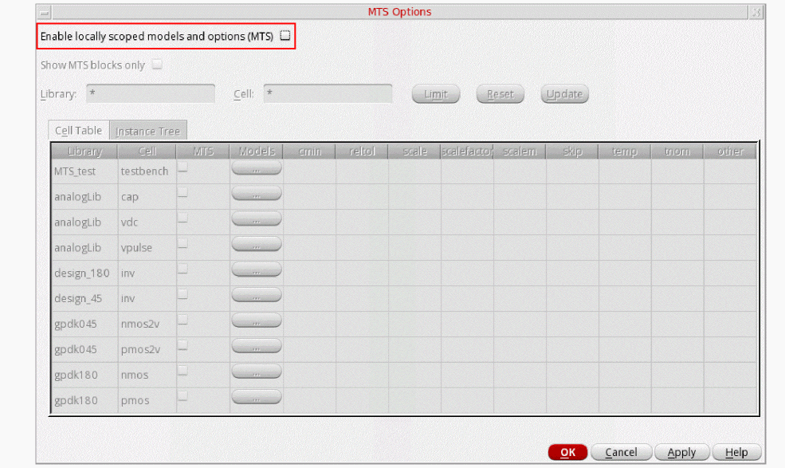 -
Select the Enable Locally scoped models and options (MTS) check box to enable the MTS options for the selected test.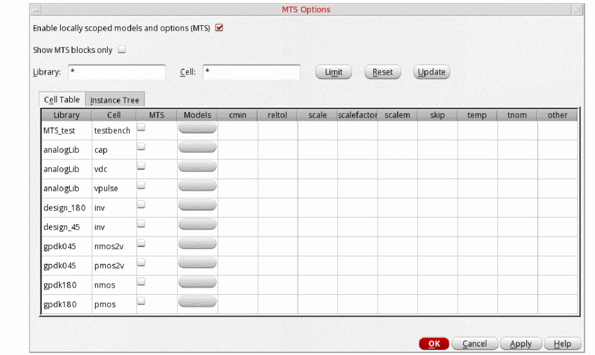
- Click OK to save the changes.
After enabling MTS options in your test setup, you can enable local scoping at the following levels in your design hierarchy:
Important Points to Note
- For Spectre, UltraSim, and AMS simulators, local scoping can be enabled at both these levels– the cell and instance levels.
- For third-party simulators, you cannot enable MTS options in your test setup.
Enabling Local Scoping for a Cell
To enable local scoping for a cell, do the following:
- In the MTS Options form, click the Cell Table tab to view a list of the library and cells in your test setup.
-
Click the check box in the MTS column for the cell that you want to enable for local scoping, as shown in the following figure.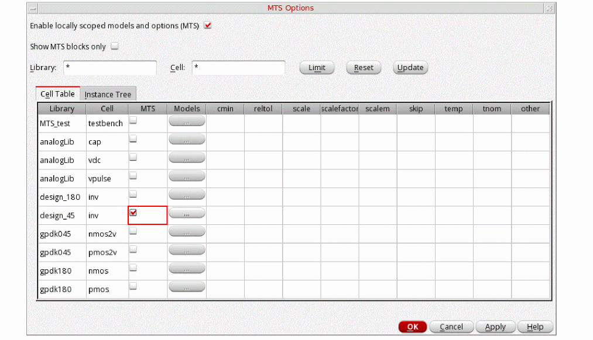
-
Click OK to save the changes.
The selected cell is now enabled for local scoping.
You can now specify the model libraries that will be locally scoped at the selected cell. See the Specifying Locally Scoped Models for a Cell section for more information.
You can also specify various process parameters that you want to include locally in the simulation. See the Specifying Local Simulator Options for a Cell section for more information.
Specifying Locally Scoped Models for a Cell
To specify the models that will be locally scoped at the cell level, do the following:
-
On the Cell Table tab, in the row for the cell for which you have enabled local scoping, click the ellipsis (...) button the Models column, as shown in the following figure.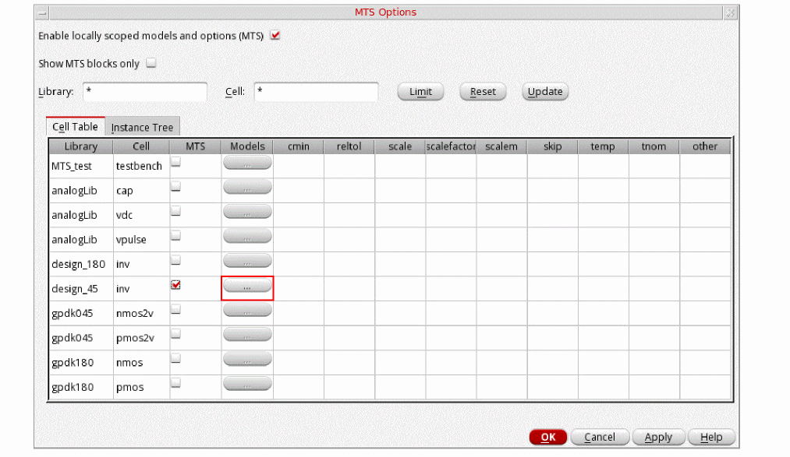The Model Library Setup form appears, as shown in the following figure.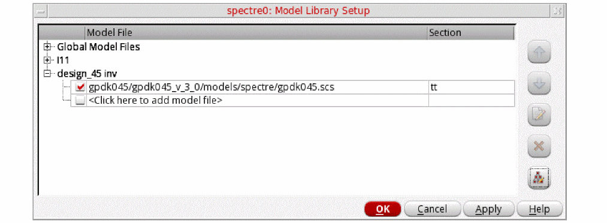
- Follow the instructions described in the Choosing Model Library Path section to select the model files.
Specifying Local Simulator Options for a Cell
To specify the various process parameters, such as tnom, scale, scalefactor, temp, and scaleem, that you want to include in the simulation for a cell, do the following:
-
On the Cell Table tab, click in the column for the simulator option you want to specify, and then type a value.
The following figure shows an example where the local simulator options,scaleandtemp, are specified for theinvcell.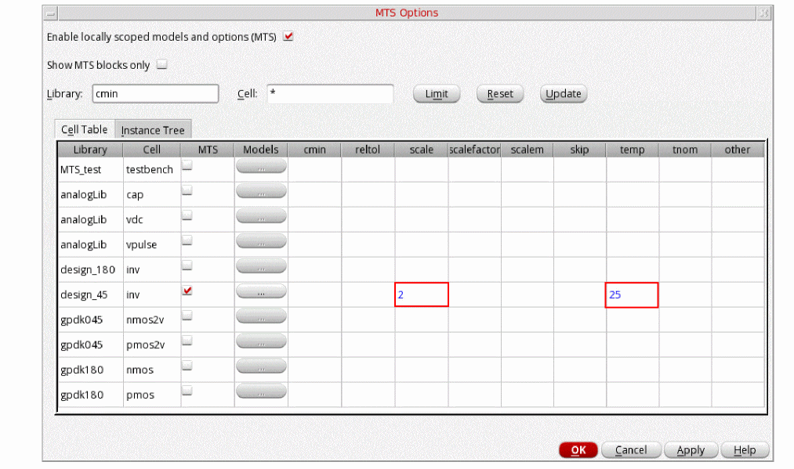 - Click OK to save the changes.
Important points to note
-
Currently, all the supported Spectre options are provided as columns, such as,
cmin,reltol,tnom,scale,scalefactor,scalem,skip,temp, andtnom, in the MTS Options form. If you want to include these options in the simulation locally, you can specify them in the respective columns. -
In addition to the currently supported local options, if Spectre supports new local options in future, you can include them too in the simulation locally by specifying their values in the
othercolumn.
Enabling Local Scoping for an Instance
To enable local scoping for an instance, do the following:
-
In the MTS Options form, click the Instance Tree tab to view an alphabetical list of the instances available in your test.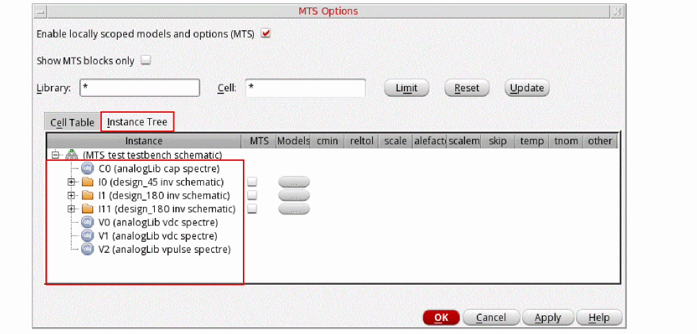
-
Select the check box in the MTS column for the instance that you want to enable for local scoping.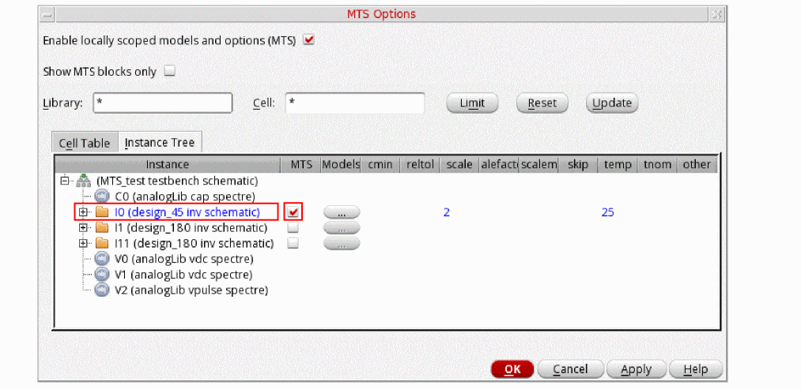
-
Click OK to save the changes.
You can now specify the model libraries that will be locally scoped for the selected instance. See the Specifying Locally Scoped Models for an Instance section for more information.
You can also specify various process parameters that you want to include locally in the simulation. See the Specifying Local Simulator Options for an Instance section for more information.
Specifying Locally Scoped Models for an Instance
To specify the models that will be locally scoped for an instance, do the following:
-
On the Instance Tree tab, click the ellipsis (...) button in the Models column for the instance that is enabled for local scoping. Such instances appear in blue.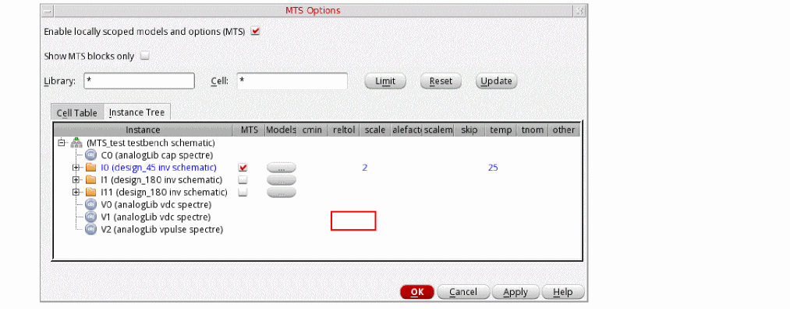The Model Library Setup form appears, as shown in the following figure.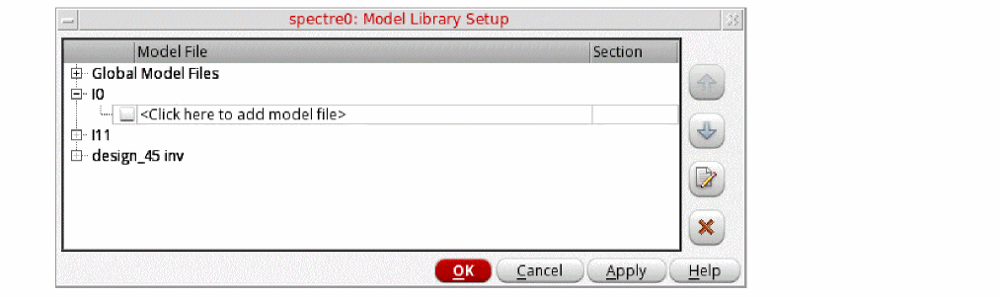
- Follow the instructions described in the “Specifying Model Libraries” section to select the model files.
Specifying Local Simulator Options for an Instance
To specify the various process parameters, such as tnom, scale, scalefactor, temp, and scaleem, that you want to include in the simulation for an instance locally, do the following:
-
On the Instance Tree tab, click in the column for the simulator option you want to specify, and then type a value.If the local simulator options are specified at the cell level, they are copied to the instances from their cells, provided that the local scoping is enabled at both the cell and the instance levels.The following figure shows an example where the local simulator option,
tnom, is specified at theI0instance andscaleandtempare copied from theinvcell that contains theI0instance in the design hierarchy.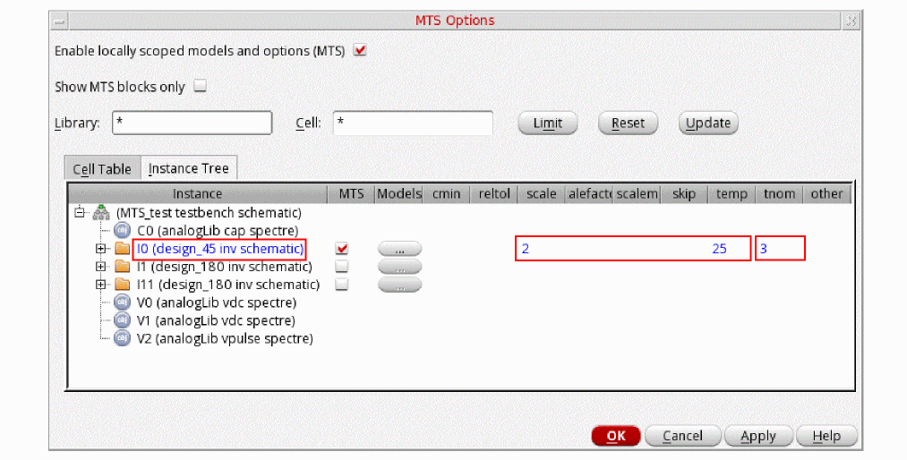 - Click OK to save the changes.
Disabling Local Scoping
Perform the following steps to disable the local scoping for a cell or an instance:
- In the MTS Options form, on the Cell Table tab or the Instance Tree tab, deselect the MTS check box next to a cell or an instance for which you want to disable the local scoping.
Important Point to Note
You cannot disable the local scoping for a cell if the local scoping is enabled for any of its instances. For such library cells the MTS check box appears dimmed and cannot be deselected.
In the following example, a side-by-side view of the Cell Table and Instance Tree views is shown.
Limiting the View by Library or Instance
You can limit what appears on the MTS Options form by library name, cell name, or both.
To limit the view of design components on the MTS Options form to only those in a particular library or set of libraries, do the following:
- In the Library field, type a filtering string.
-
Click Limit.
Only those design libraries that match the filtering string are displayed in the MTS Options form.
To limit the view of design components on the MTS Options form to a particular cell or set of cells, do the following:
- In the Cell field, type a filtering string.
-
Click Limit.
Only those cells that match the filtering string are displayed in the MTS Options form.
To limit the view by library name and by cell name, do the following:
- In the Library field, type a filtering string.
- In the Cell field, type a filtering string.
-
Click Limit.
Only those cells that match the filtering string in the Cell field contained in those libraries that match the filtering string in the Library field are displayed in the MTS Options form. - Select the Show MTS blocks only check box to display only MTS Blocks in the Cell Table. The MTS blocks are indicated with a check mark in the MTS column of the Cell Table
- Click the Reset button to clear the filtering and show all libraries and cellviews.
Click the Update button view only the blocks that are selected as MTS blocks.
Return to top